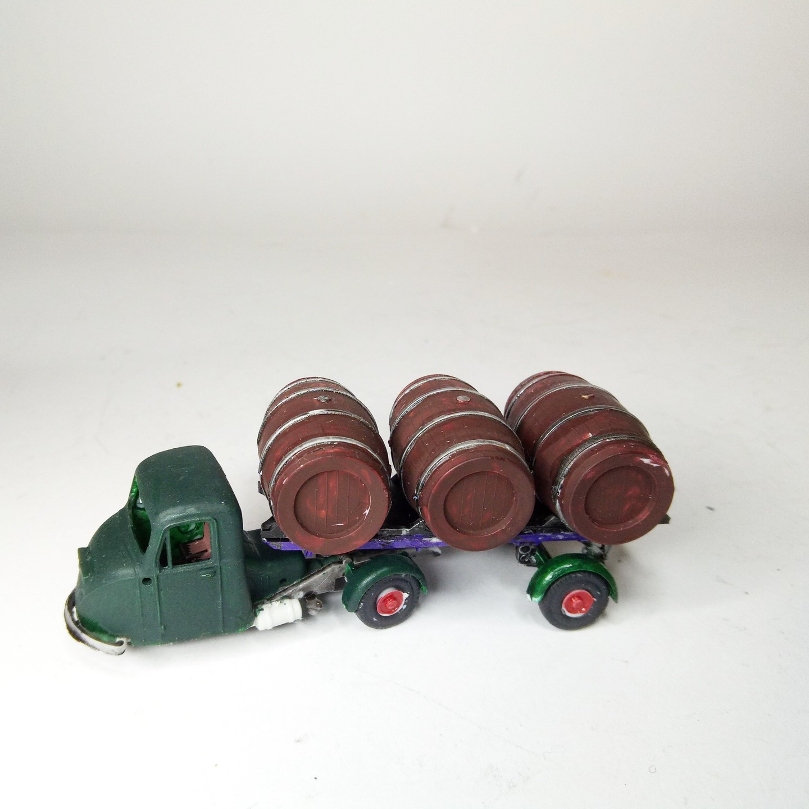

Auto e veicoli stradali · scale model archive
Scammell Scarab
Scammell Scarab — Kit: Airfix, Scale: 1/72 #Scammell #Scarab. The Scammell Scarab was a British three-wheeled "mechanical horse" used primarily for light…

Photo gallery
English description
The Scammell Scarab was a British three-wheeled "mechanical horse" used primarily for light goods transport, especially in urban areas, starting from the 1940s into the 1960s. It was often seen hauling trailers like the one in this model, frequently transporting goods such as barrels and other cargo.
More on: https://www.youtube.com/watch?v=GkwEfeE6GGs&ab_channel=ClassicVehicleChannel
One of the first kits I remember
#1/72 #Airfix
Descrizione italiana
Lo Scammell Scarab era un “cavallo meccanico” britannico a tre ruote, usato soprattutto per trasporti leggeri in città dagli anni Quaranta agli anni Sessanta. Spesso trainava rimorchi come quello di questo modello, con merci come barili e altri carichi. Maggiori informazioni: https://www.youtube.com/watch?v=GkwEfeE6GGs&ab_channel=ClassicVehicleChannel. Uno dei primi kit che ricordo.